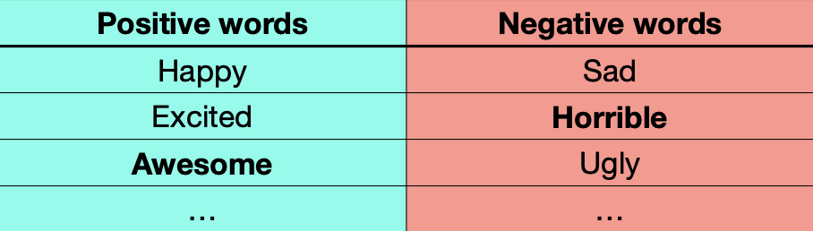

Sentiment analysis is the automatic detection of the attitude towards an object.
The best examples are movie reviews (is it negative or positive)?
It's actually quite surprising that it took such a long time for Hollywood to assassinate, pardon me, remake this very interesting story based on the 1971 Stanford prison experiment. The problem with this remake is that, as in most things Hollywood, it's all about big name actors and big fights and nice camera angles.
Naive Bayes
Input:
- A document d (of which we want to know the class/sentiment)
- A set of classes — in our case
- A training set of m hand-labeled documents
Output:
- a learned classifier
So it works like this:
- What we want to know:
- Bayes’ Rule:
- What we want to know:
where:
- likelihood of the document
- Prior probability of the + class
- Likelihood of the document, represented as set of features (words and their positions).
Bag-of-word model
The idea behind the ‘bag-of-word’ is that word order does not matter for text classification. This is obviously not true in all cases… but it is a useful simplification, and the results are often “good enough” in practice. However, there are still too many parameters. To further simplify the problem, we assume that features are mutually independent (e.g. reading ‘great’ in a review does not affect the likelihood of reading ‘fantastic’ later on in the same review).
Naive Bayes training
How can we find and
How many times does appear, out of all words that appear in positive documents? *This is a Language Model
What we want to know:
Is “a good movie” positive or negative?
What happens we need to estimate for a word we have never seen before in the training set (e.g. the title of a new movie)?
We can solve this by “boosting” all counts, e.g. with Laplace smoothing. We redefine Count as “Count + 1”
Practical Issues of Naive Bayes
Irony, and especially sarcasm, can be challenging (for every sentiment analysis algorithm, not just NB):
- “Battlefield Earth saves its scariest moment for the end: a virtual guarantee that there will be a sequel.”
- “Valentine’s Day is being marketed as a Date Movie. I think it’s more of a First-Date Movie. If your date likes it, do not date that person again. And if you like it, there may not be a second date.”
of a chain of observations quickly becomes a tiny number:
not a very good movie
Most computer languages cannot represent tiny numbers accurately. In Python:
Solution: move everything to log space, where the logarithm of a product is the sum of the individual logarithms: Now we are only adding numbers, so they become easier to represent.
Ignoring word order means ignoring negation (“Contrarily to my expectations, it was not bad at all”). How can we fix this?
- Can be mitigated with preprocessing, by adding a prefix to words after negation, until punctuation (e.g. “NOT_”).
- The pre-processed text becomes “it was not NOT_bad NOT_at NOT_all”.
- We expect that
What if we have too little data to train our classifier effectively?
- Estimate word similarity (next week’s lecture) between unknown word and words we know about. Then assign the same weight as most n similar known words.
- Use external information from a sentiment dictionary
- from the sentiment dictionary
If “horrible” and “awesome” are not in training, P(horrible) == P(awesome) ?
- Use external information from a sentiment dictionary

Why use Naive Bayes?
- It is very fast to train, and very fast to classify
- Low storage requirement: you only need to store 2 numbers per word in your corpus
- Works well with limited amount of features
- Robust to stop words and irrelevant features
- It is easy to interpret why a certain review/post/mail/etc. has been classified the way it is (by checking the contribution of each feature).